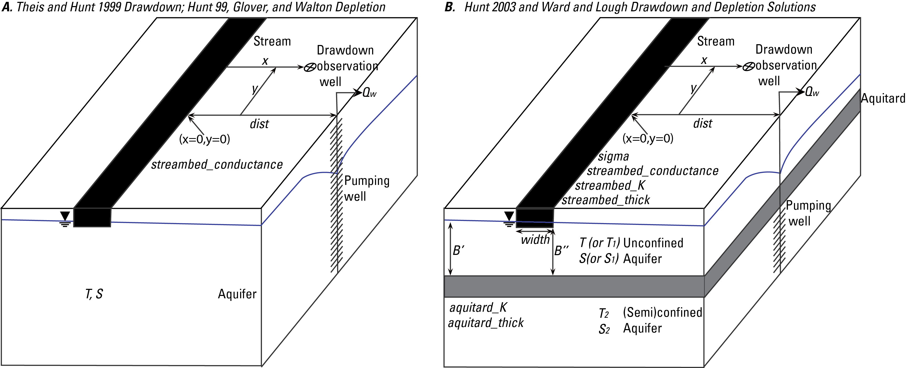

Usage
Overview
The pycap-dss software provides a suite of analytical solutions to quantify stream depletion and drawdown due to pumping a groundwater well. In the sections below are information about individual solutions. These can be exposed and evaluated directly. A list of available functions for depletion and drawdown, respectively, can be listed from the code as follows:
import pycap
# list the depletion functions
pycap.ALL_DEP_METHODS
# list the drawdown functions
pycap.ALL_DD_METHODS
The code is designed in a modular way such that additional methods can be implemented and then accessed by the rest of the code. The following sections expand on these capabilities and build on one another in terms of complexity. The Individual Solutions section describes how each analytical solution can be accessed directly and executed. The Well Object section describes the Well class that is a wrapper around the depletion and drawdown solution and also can be initialized with general properties about wells and responses (e.g. streams or drawdown locations). A single instance of a Well object represents a pumping well and can include aquifer properties, pumping schedules, and various responses at various locations. Finally, the Analysis Project section describes an example project as implemented by the Wisconsin Department of Natural Resources in which multiple existing and/or proposed pumping wells with multiple responses can be evaluated in a coordinated single project. This represents one example, but not the only way, to coordinate a potentially complex area with many wells and responses and to systematically report the results.
Individual Solutions
Individual solutions are low-level implementations of analytical solutions tested against the literature documenting them. They are available in pycap-dss mostly for use by the higher-level classes documented below, but are also available directly if users wish to use them that way.
The Solutions_Demonstration notebook demonstrates the use of individual analytical solutions in pycap-dss. These individual solutions typically require a pumping rate, time, aquifer properties, and relevant geometry (e.g. distance from a stream, or from a drawdown response location, or both). Each function can be accessed directly from the pycap module as.
import pycap
# use the glover_depletion function for stream depletion
pycap.glover_depletion
The documentation for these functions specifies exactly which parameters are required and what is returned. Time and spatial coordinate parameters can broadcast to multiple values, but only for one or the other - not both.
A note on units. For most functions, the concept is for units to be self-similar. In other words, a consistent length unit and time unit is assumed, and all properties, geometry, and times must be self consistent. An exception to this is the walton_depletion stream-depletion function. This special case assumes specific units for inputs.
A schematic diagram shows the various parameters as they are defined for use in this software.
{kind=link}
Most of the parameters shown are depicted with the variable names as called for in the functions of the software. An important additional explanation is for the x and y coordinates that are required to identify the location at which to calculate drawdown for solutions that consider streambed conductance for drawdown calculations. The x origin (x=0) for such coordinates is at the stream in the direction perpendicular from the stream to the pumping well. The y origin (y=0) is at the streamwise location of the pumping well perpendicular to the screen.
Well Object
The pycap-dss code is designed modularly such that information common to multiple depletion and drawdown solutions can be contained in a higher-level object that is implemented from the perspective of evaluating responses to a single pumping well. As such, the class is called the Well class and the WellClass_Demonstration notebook demonstrates the functionality.
One key design element is the ability to provide either a csv file or a pandas Series with a time series of pumping rates. The index in either case is assumed to be provided in sequential days - 365 per year (leap years are not considered). With these time series, the Well class uses superposition and image wells (in time) to reconstruct the temporal response to variable pumping rates over time.
It is also possible, in the Well class, to evaluate multiple response locations (either streams or drawdown locations). As a result, some response-related inputs are provided as dictionaries with keys indicating response names.
Finally, a string identifies the drawdown and/or depletion methods requested for evaluating the responses. This allows the user to easily change the method for calculating responses. When this is done, additional inputs are often needed. These must be provided. If additional inputs are not provided, methods may fail indicating which inputs are missing.
Analysis Project
The well_object section describes wrapping up functionality from the perspective of a single pumping well. An advantage of using the analytical solutions in pycap-dss is the underlying assumption that multiple wells can be superposed - both in time, as noted above, but also in accumulating the responses of multiple pumping wells on a single response location. The Wisconsin Department of Natural Resources created the AnalysisProject class as an example of combining multiple wells and multiple responses into a single cohesive project with consistent reporting of results.
The AnalysisProject_Demonstration notebook demonstrates the functionality of this class. The notebook starts by reading in a Microsoft Excel file test_run.xlsx built from a template with data formatted specifically for the notebook. Next, the information is converted into nested dictionaries and written out to a yml configuration file. The Excel step is optional, and a user could, instead, start at the step of creating the yml configuration file from scratch. The yml file made by this example is TestExample.yml.
The remainder of the notebook shows running pycap and reporting the results. Note that this is an example that does not explore all functionality of the AnalysisProject class and also certain protocols, particularly expectations of specific units, are required. This class, however, is built upon the solutions and Well object discussed above, so an interested user could create similar functionality.